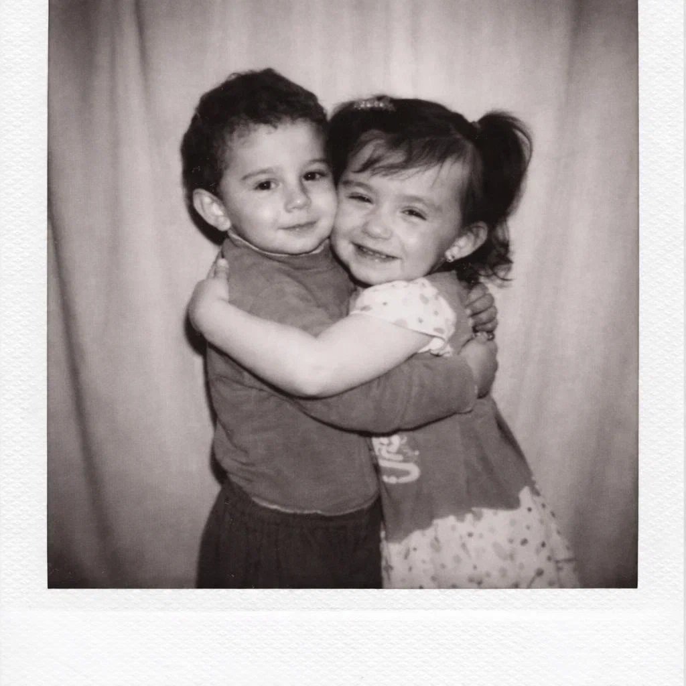
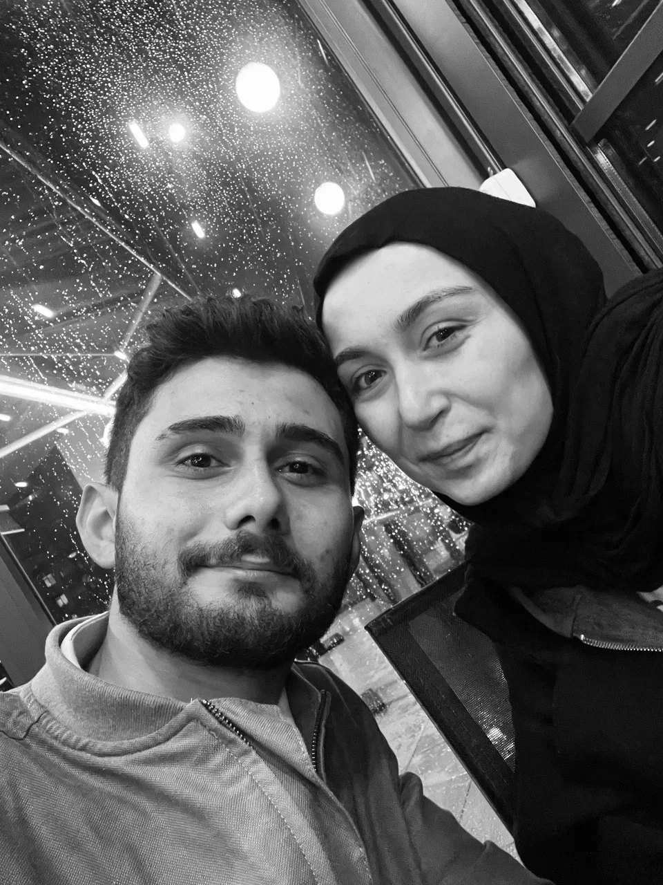
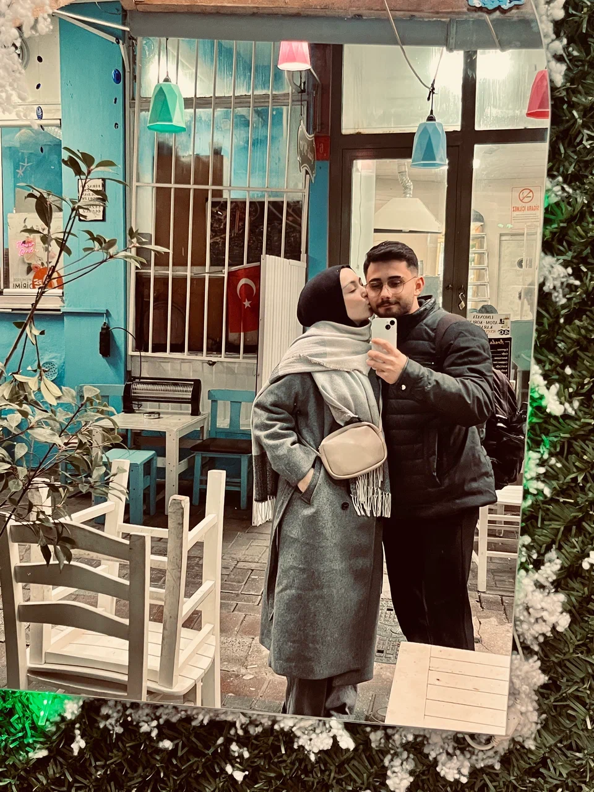
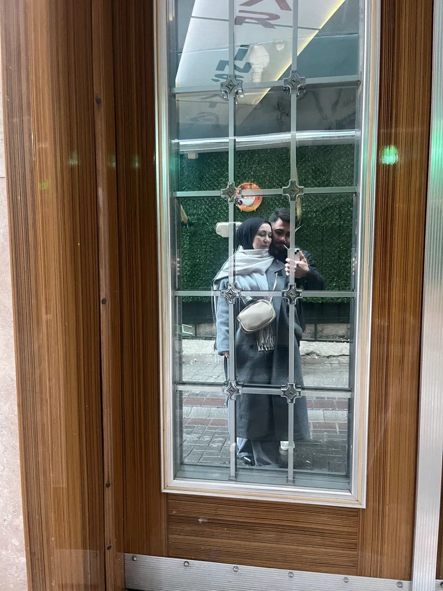
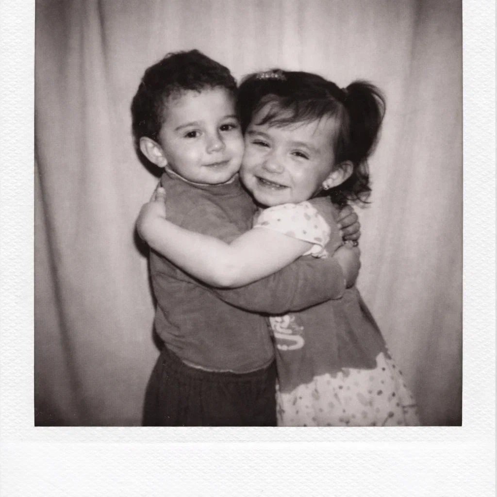
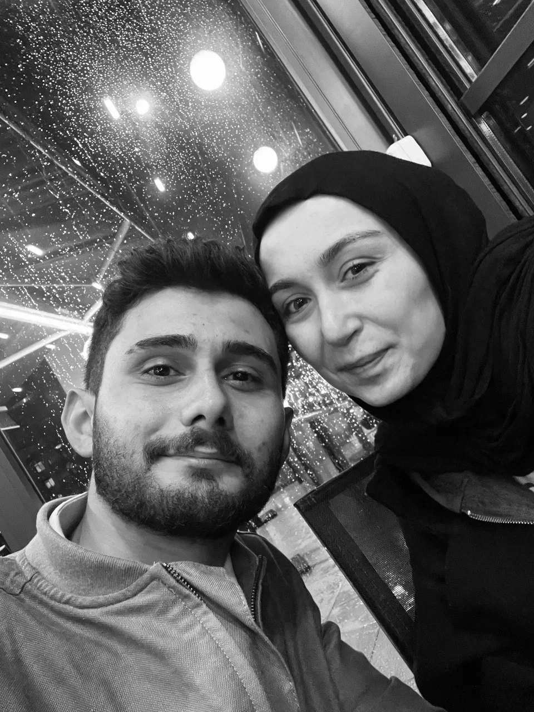
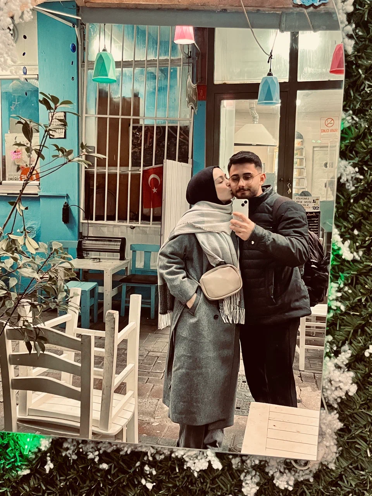
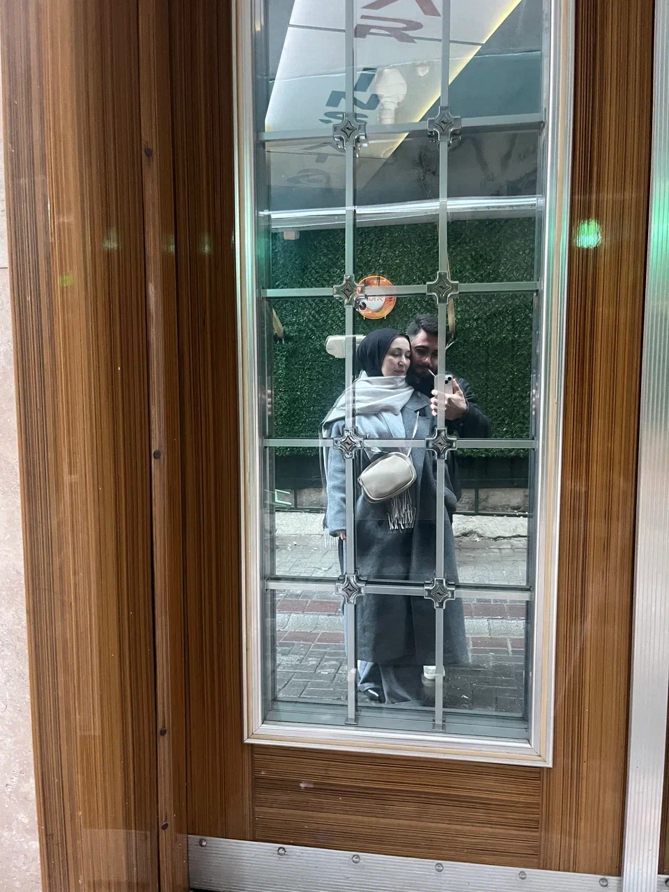

❤️ Sürpriz Başlıyor... ❤️
Senin İçin...
Hayatıma girdiğin günden beri içimde tarif edemediğim ama çok tanıdık bir huzur var. Bazen sadece sesini duymak bile yetiyor, bazen bir mesajın günümü güzelleştiriyor. Sen farkında olmasan da, en küçük detayların bile bende büyük anlamlar taşıyor. Gülüşün, bakışın, konuşma tarzın… Hepsi kalbimde kendine ait bir yer açtı.
Seni sevmek bana hiç ağır gelmedi. Aksine, sanki kalbim seni hep bekliyormuş gibi… Yanındayken zamanın nasıl geçtiğini anlamıyorum; yanımda olmadığında bile varlığını hissediyorum. Güldüğünde mutlu oluyorum, üzülürsen içim sıkılıyor. Çünkü seni gerçekten seviyorum; alışkanlıkla değil, ezberle değil, kalpten.
Sevgililer Günü belki herkes için sadece bir gün, ama benim sana olan sevgimi kelimelere dökmek için güzel bir bahane. Çünkü seni sadece bugün değil, her gün seviyorum. İyi ki varsın, iyi ki hayatıma dokundun, iyi ki benimlesin. Gelecekte ne olursa olsun, şu an kalbimde olduğun yer benim için çok özel.
Sevgililer Günümüz kutlu olsun sevgilim… Seni çok seviyorum. Hem bugün, hem yarın, hem de her gün 🖤🤍🖤
 






